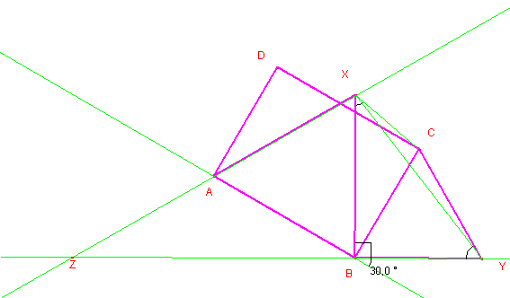
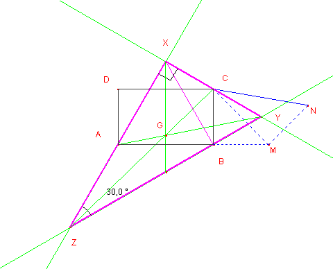
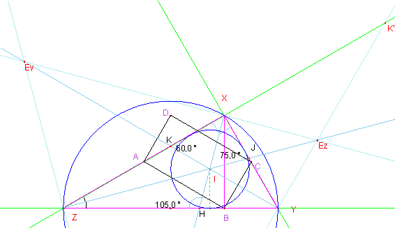
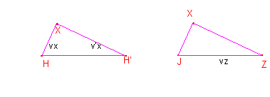
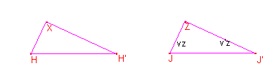

Problema 304.
Dado el rectángulo ABCD, con a =AB (base) y b = BC ( la altura), y a>b desde la base AB se construye internamente el triángulo equilátero ABX, y desde la altura, b= BC, se construye exteriormente un triángulo equilátero BCY. Las rectas AX y BY se cortan en Z.
Se pide:
a) Hallar la relación entre la base y la altura del rectángulo para que los puntos X, C e Y, estén alineados.
b) Caracterizar y calcular en este caso todos los elementos significativos: lados, ángulos, medianas, bisectrices interiores y exteriores, radio inscrito y radio circunscrito del triángulo XYZ.
Romero, JB. (2006). Comunicación personal
SoluciónSaturnino
Campo Ruiz, profesor del IES Fray Luis
de León de Salamanca .- 
a) Si los puntos X, C e Y están alineados el ángulo BYC ha de ser de 60º. Observando la figura deducimos de inmediato que el ángulo XBY es recto, y entonces el ángulo YCX ha de ser de 30º. Se forma un triángulo rectángulo en B con ángulos agudos de 30 y 60º. Aplicando una razón trigonométrica cualquiera concluimos que las longitudes de este triángulo guardan la relación 1:√3: 2. La relación entre los catetos (base y altura del rectángulo) es 1:√3. Así pues tenemos que construir un rectángulo con base b y altura a de modo que se verifique b=√3a.
La construcción la efectuamos aplicando reiteradamente el teorema de Pitágoras.
A partir de la altura a=BC construimos el triángulo rectángulo CBM con sus dos catetos iguales. Tomando ahora CM=√2a y MN=a como catetos se tiene por fin CN=√3a , y podemos realizar la construcción.
b) El triángulo XYZ es rectángulo en X pues el ángulo BXY según hemos visto es de 30º y a él se le suma un ángulo del triángulo equilátero.
El ángulo en Y es de 60º y por tanto el ángulo en Z es de 30º. Los triángulos rectángulos XBY y ZXY son semejantes y su razón de semejanza es XY:XZ=1/2 por ello AX es la mitad de XZ.

Los lados de este triángulo miden pues hipotenusa x = ZY=2·XY=4·a; y los catetos y=XZ=2·AX=2·b=2·√3a ; z=XY=2·BY=2·a.
La mediana mX=2·a que es el radio de la circunferencia circunscrita (en un triángulo rectángulo es la mitad de la hipotenusa, que en este caso es el cateto XY). La mediana mY es la hipotenusa del triángulo cuyos catetos miden 2a=XY y b=AX. Un cálculo elemental da mY= √7a. Finalmente mZ también es la hipotenusa de otro triángulo: sus catetos son a=CX y 2b=XZ. Su valor es mZ=√13a.

El radio de la circunferencia inscrita lo podemos calcular a partir de la fórmula del área del triángulo en la que se utiliza este radio: semiperímetro por radio de la c. inscrita ha de ser igual al semiproducto de los catetos.
Semiperímetro = p = (3+√3)a; Área = 1/2·yz =2√3a2, por tanto radio inscr =r =(√3-1)a = b-a.
Para el cálculo efectivo de la longitud de las bisectrices tenemos para cada una de ellas un triángulo de ángulos conocidos y al menos dos de sus lados. Con las fórmulas de la trigonometría y mucha, pero que mucha paciencia, se puede llegar a obtener sus medidas:
La bisectriz de X, que vamos a llamar vX se puede obtener del triángulo XYH cuyos ángulos respectivos miden 45º, 60º y 75º.
Se obtiene vX =( sen 60/sen75)·z=√2(3-√3)a =√2(3a-b).
Los triángulos rectángulos ZXJ e YXK el primero con ángulos de 15º y 75º y el segundo 30º y 60º (semejante al ZXY) nos proporcionan después de muchos cálculos:
vY =YK=YZ· =x·tg 30 =4/3·b; vZ =ZJ= =2 vX.
Para las bisectrices exteriores consideramos en cada una de ellas el triángulo rectángulo que forman con su homóloga interior. La particularidad de dos de estos tres triángulos es que son semejantes, sus ángulos agudos son de 15º y 75º respectivamente. Nos referimos a los que tienen como catetos las bisectrices de los ángulos X y Z (que no se ven el dibujo).

áng(H)=áng(J)=75º.
De la semejanza de esos dos triángulos se tiene ; (1)
Del teorema de la bisectriz se deduce que , por tanto ; (2) Multiplicando (1) y (2) resulta , que permite calcular v’x =√2(3a+b)..

Para calcular la bisectriz exterior de Z consideramos los triángulos semejantes XHH’ y ZJJ’. Resulta . Despejando =2· v’x y calculamos la bisectriz exterior.
Por último la bisectriz exterior de Y determina con la interior un triángulo rectángulo YKK’ semejante a XKY y a XYZ. La relación entre los lados de YKK’es como ya dijimos al principio 1:√3: 2, por tanto = 4·a y ya tenemos calculada la última bisectriz.